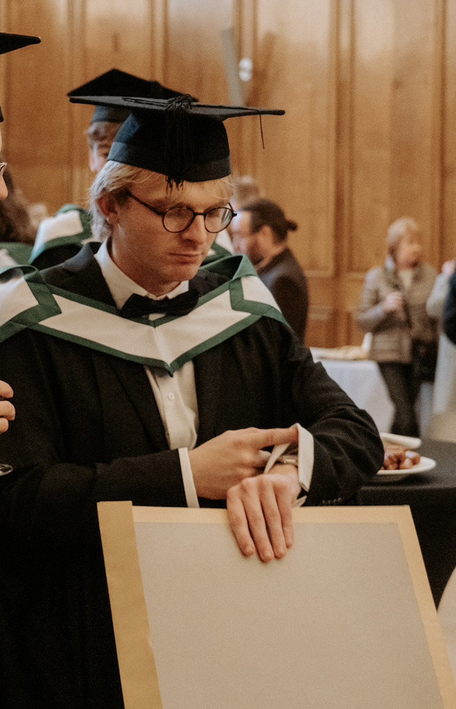

I am a recent alumnus of the School of Physics at Trinity College Dublin, where I completed my Bachelor's and Master's degrees. Established in 1592, Trinity is Ireland's oldest and highest-ranked university, with the School of Physics recently celebrating its 300th anniversary. In October 2024, I earned a Master in Science (M.Sc.) in Quantum Science and Technology. This program uniquely focused on the theoretical and software aspects of quantum technology where it combined quantum information science, quantum hardware physics, and quantum materials. To my knowledge, it is the only program of its kind in Ireland.
Modules completed during the M.Sc. included:
Further details about the M.Sc. program can be found here.
As part of the M.Sc., I conducted a 12-week research project with Trinity's Quantum Information Theory Group. My dissertation, titled Petz Recovery for Quantum Processes with Memory, was supervised by Prof. Felix Binder and Dr. Simon Milz. Currently, I am continuing this work with the Quantum Information Theory Group as a research intern. Over the last five years, I have gained a lot of experience with programming languages such as Python. I have knowledge of scientific libraries such as: NumPy, Qiskit, TensorFlow, CVXPY. I have some limited experience with the Julia language.
Prior to my Master's, I earned a Bachelor's degree in Physics from Trinity College. This 4-year undergraduate program emphasized Condensed Matter Physics, Quantum Physics, Thermodynamics, Electromagnetism and Astrophysics. During my undergraduate, I undertook a 9-week research project with the Computational Spintronics Group, supervised by Prof. Stefano Sanvito. My dissertation, Calculating the Magnetic Critical Temperature from Experimental Data, involved simulating the impact of disorder on the magnetic critical temperature of an iron lattice.
Thank you for visiting my website!
Best regards,
Dillon